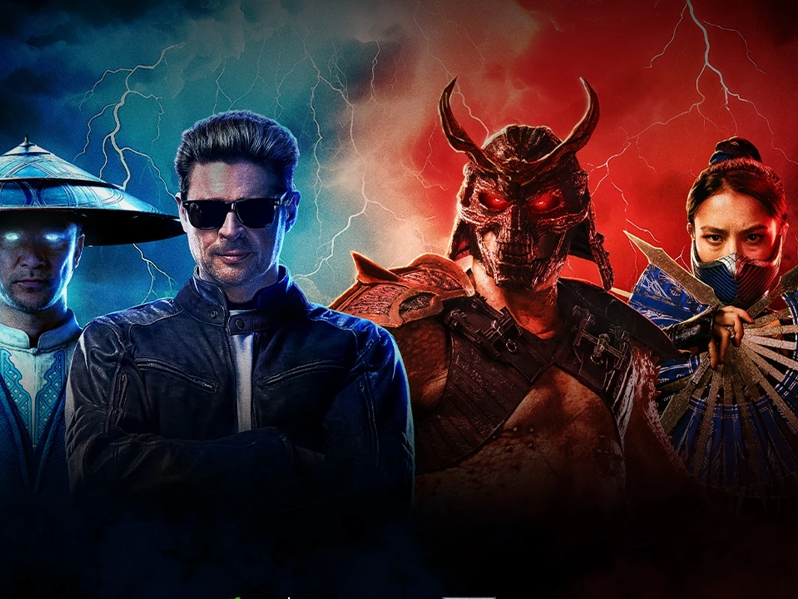
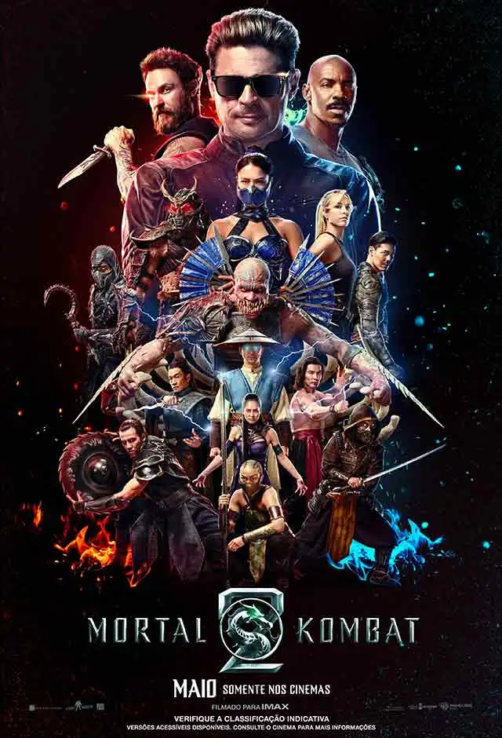

Mortal Kombat 2 finalmente entrega a fantasia violenta que os fãs esperavam
Publicado em: 09 de Maio de 2026

Sem medo de ser divertido, a sequência deixa de lado os erros do primeiro filme e acha equilíbrio para Karl Urban não soar repetitivo.
Não dava para entender como Mortal Kombat, uma marca de mais de 30 anos e mais de 100 personagens, precisou criar um novo, que ninguém conhecia ou com quem se importava, para o filme reboot de 2021. No meio disso, ainda tentava ligar Cole Young (Lewis Tan) à linhagem de Hanzo Hasashi, o Scorpion, e colocá-lo como uma das únicas opções dos humanos contra as forças da Exoterra. Felizmente, Mortal Kombat 2 arruma essa bagunça com uma simplicidade louvável e entrega o que os fãs de fato esperam: porrada, sangue, fantasia e seus personagens favoritos como protagonistas.
O roteirista Jeremy Slater coloca dois deles no centro da história de Mortal Kombat 2. A primeira é Kitana (Adeline Rudolph), que vê seu mundo dominado por Shao Kahn (Marty Ford) e precisa entrar no torneio ao lado do vilão para enfrentar as forças de Lorde Raiden (Tadanobu Asano). O segundo é Johnny Cage (Karl Urban), queridinho dos fãs do game, que vive no ostracismo após uma carreira de sucesso e é forçado a se juntar ao grupo que conta com Sonya Blade (Jessica McNamee), Jax (Mehcad Brooks), Liu Kang (Ludi Lin) e Cole Young (Lewis Tan).
A partir do momento em que isso é estabelecido — e não dura mais que 20 minutos —, MK2 joga o espectador em uma sucessão de momentos que misturam o jeito canastrão do filme de 1995 com todo tipo de fanservice, deixando os seguidores do videogame com um sorriso no rosto durante toda a projeção. Cenários, figurinos, golpes e fatalities são enfileirados sem medo ou vergonha do que representam para a franquia, algo que o filme de 2021 parecia evitar o tempo inteiro ou, pior, parecia pensado para soar realista. A excelente luta entre Liu Kang e Kung Lao, na continuação, é a prova de que Mortal Kombat precisa ser um espetáculo que misture artes marciais, violência e boas doses de canastrice.
Quem entende isso muito bem é Karl Urban. O ator consegue se desvencilhar do brucutu William Butcher, de The Boys, e entrega uma mistura entre o protagonista da série do Prime Video e sua versão do Dr. McCoy, no reboot de Star Trek. Cage tem a marra necessária para acreditarmos que ele foi um astro e que, tal qual uma caricatura de Hollywood, no fundo nunca vai deixar de acreditar que esse é o seu grande poder. Ao mesmo tempo, ele consegue transmitir a estranheza de entrar no mundo da Exoterra e os medos humanos que enfrentar um leque com lâminas ou criaturas bizarras traz imediatamente. O encontro entre Cage e Baraka (CJ Bloomfield) está entre os momentos mais divertidos de todos os filmes de MK.
O contrapeso a isso é Kitana, que faz parte da ala mais séria da história. Shao Kahn é um vilão sem piadinhas, que mata qualquer um e usa a violência como forma mais simples de resolver qualquer situação. Isso coloca a princesa em uma posição mais perigosa e Adeline Rudolph, ao lado de Tati Gabrielle, que interpreta Jade, entrega essa seriedade sem parecer antipática. Esse balanço entre a dupla de protagonistas é essencial para que o filme funcione e não repita a falta de equilíbrio da produção anterior. Aliás, o melhor elemento do filme anterior, o Scorpion de Hiroyuki Sanada, acaba sobrando na sequência, tornando-se um elemento que parece forçado na jornada dos protagonistas para destruir o amuleto de Shinnok.

Sem medo de parecer um carnaval banhado a sangue e repleto de frases de efeito, Mortal Kombat 2 é divertido como um encontro de amigos para jogar o game criado por Ed Boon e John Tobias e despretensioso na medida certa, fugindo de uma seriedade de que nunca precisou.